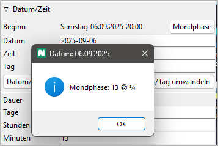

Erzählte Zeit
Wenn im Roman das Datum und die Zeit eine Rolle spielen, bietet novelibre vielfältige Unterstützung dafür an. Wenn Sie Ihr Schreibprojekt sorgfältig einrichten, stehen Ihnen beim Schreiben nützliche Informationen zur Verfügung, vom aktuellen Wochentag über die Mondphase bis zum Alter der beteiligten Figuren.
Sie können jedem Abschnitt ein Datum, eine Zeit und eine Zeitdauer zuordnen. Das Datum kann unzpezifisch oder spezifisch sein, wobei mit unspezifisch die Anzahl der Tage seit Handlungsbeginn gemeint ist. Die Geschichte beginnt nach dieser Zählung am Tag Null. Für das spezifische Datum gilt bei novelibre der gregorianische Kalender. Sie können nur positive Datumsangaben mit Jahreszahlen zwischen 0001 und 9999 eingeben.
Die Namen von Wochentagen und Monaten erhält novelibre vom Betriebssystem; es wird also die Systemsprache verwendet. Standardmäßig werden Datumsangaben so ausgegeben, wie es in der Systemsprache üblich ist. Falls Ihnen das nicht zusagt, können Sie eine Einstellung wählen, in der das Datum im ISO-Format ausgegeben wird, so wie Sie es auch eingeben.
Datums- und Zeitangaben sind optional; Sie können jedem Abschnitt entweder ein spezifisches oder ein unspezifisches oder gar kein Datum zuweisen. novelibre kann spezifische Datumsangaben in unspezifische umwandeln und umgekehrt, wenn Sie in den Bucheigenschaften ein Bezugsdatum für den Tag Null eingeben. Selbst wenn Sie keine spezifischen Datumsangaben in Ihrer Geschichte benötigen, kann es hilfreich sein, ein Bezugsdatum anzugeben. Auf diese Weise wird der Wochentag angezeigt, und für die Figuren im Abschnitt können Sie das Alter abrufen, sofern Sie ein Geburtsdatum angegeben haben.

Außerdem können Sie sich dann die Mondphase anzeigen lassen, die zumindest für das 20. und 21. Jahrhundert einigermaßen genau berechnet wird.
Standardmäßig tippen Sie Datum, Zeit und Dauer in die entsprechenden Eingabefelder in den Abschnittseigenschaften ein. Falls der vorhergehende Abschnitt bereits ein Datum und eine Zeit hat, können Sie novelibre auch per Knopfdruck Startdatum und -Zeit erzeugen lassen, so dass die Handlung im Abschnitt unmittelbar der des vorhergehenden folgt. Wenn der Folgeabschnitt ein Datum und eine Zeit hat, können Sie novelibre automatisch eine Zeitdauer erzeugen lassen, so dass der Folgeabschnitt nahtlos an den aktuellen anschließt.
Noch komfortabler geht es mit spezialisierter Zeitleistensoftware wie dem freien Timeline oder dem kommerziellen Aeon Timeline 2. Damit können Sie Abschnitte wie Ereignisse behandeln und beliebig auf einem Zeitstrahl anordnen, verschieben, verlängern und verkürzen. Für die zwei oben genannten Softwareanwendungen gibt es Plugins, welche die Zeitleisten mit novelibre abgleichen, neue Zeitleisten erzeugen und neue Romanprojekte aus vorhandenen Zeitleisten erzeugen können.
Wer kein Zeitleistenprogramm benutzen will, findet im nv_tlview plugin eine grafische Zeitstrahl-Anzeige für die mit Datum und Zeit versehenen Abschnitte.
Darüberhinaus kann man sich datierte Abschnitte in einer Zeittafel anzeigen lassen, die auch die Plotlinien umfasst.